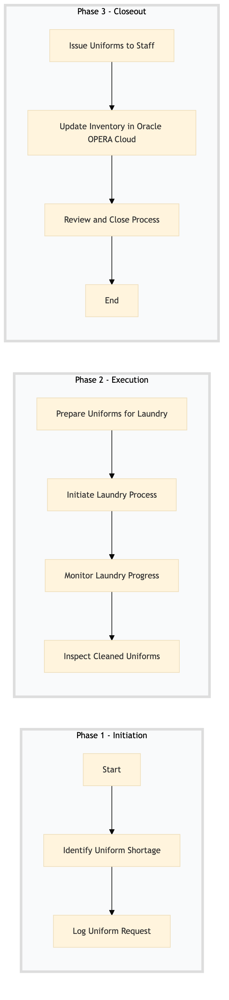

| Role | Steps |
|---|---|
| Executive Housekeeper | 1.1 1.2 3.3 |
| Laundry Manager | 2.1 2.2 2.3 2.4 3.2 |
| Front Desk Agent | 3.1 |
| Step | Name | Role | System | Input | Output | KPI | Dec? | Exc? | Pain Point / Risk |
|---|---|---|---|---|---|---|---|---|---|
| 1.1 | Identify Uniform Shortage | Executive Housekeeper | Oracle OPERA Cloud | Inventory report from Oracle OPERA Cloud | Uniform shortage report | Less than 24 hours to identify | Y | N | Manual inventory checks can lead to inaccuracies. |
| 1.2 | Log Uniform Request | Executive Housekeeper | Oracle OPERA Cloud | Uniform shortage report | Logged request in Oracle OPERA Cloud | Less than 30 minutes to log | N | Y | Delayed logging can cause further shortages. |
| 2.1 | Prepare Uniforms for Laundry | Laundry Manager | Oracle OPERA Cloud | Logged request | Uniforms sorted and prepared for washing | Less than 4 hours to prepare | N | Y | Incorrect sorting can damage uniforms. |
| 2.2 | Initiate Laundry Process | Laundry Manager | Oracle OPERA Cloud | Sorted uniforms | Laundry order placed in Oracle OPERA Cloud | Less than 1 hour to initiate | N | Y | Delays in laundry processing can lead to shortages. |
| 2.3 | Monitor Laundry Progress | Laundry Manager | Oracle OPERA Cloud | Laundry order status updates | Updated laundry progress report | Less than 15 minutes per update | Y | N | Lack of real-time monitoring can cause delays. |
| 2.4 | Inspect Cleaned Uniforms | Laundry Manager | Oracle OPERA Cloud | Cleaned uniforms | Inspection report and approved uniform list | Less than 2 hours to inspect | N | Y | Missed defects can lead to guest complaints. |
| 3.1 | Issue Uniforms to Staff | Front Desk Agent | Oracle OPERA Cloud | Approved uniform list | Uniforms issued and recorded in Oracle OPERA Cloud | Less than 30 minutes per staff member | N | Y | Incorrect issuance can cause confusion. |
| 3.2 | Update Inventory in Oracle OPERA Cloud | Laundry Manager | Oracle OPERA Cloud | Issued uniforms list | Updated inventory report | Less than 1 hour to update | N | Y | Outdated inventory can lead to shortages. |
| 3.3 | Review and Close Process | Executive Housekeeper | Oracle OPERA Cloud | Updated inventory report | Process closure report | Less than 1 hour to review | Y | N | Neglecting reviews can lead to recurring issues. |
The process for handling uniform laundering and issuing new uniforms at a full-service Marriott hotel.